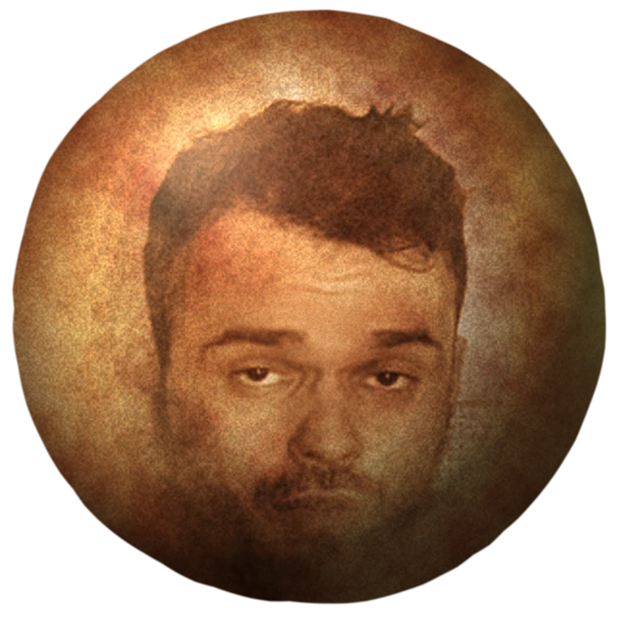

Турция отменяется.
Идём на колобка.
Четыре часа в самолёте против полутора часов в зале и ночи со своими. Считаем деньги и часы.

Море стояло на месте четыре миллиарда лет и постоит ещё неделю.
Сеанс так не умеет. Он в конкретную ночь, и до него собирается конкретная компания в конкретном настроении. Второго дубля не будет. Всё остальное на сайте про то, во сколько тебе обходится обратный выбор.
Если ты выберешь колобка, это кома.
Восемнадцать доводов
Отмечай те, с которыми согласен. Счётчик запоминает выбор и ждёт тебя на других страницах.
Расчёт в цифрах
Сколько стоит билет и вся поездка, куда уходят её сто девяносто два часа и сколько вечеров помещается в разницу.
Программа вечера
Сбор в семь, мангал, разговоры, а сеанс в четыре двадцать ночи. Порядок соблюдается нестрого.
Возражения и ответы
Что за фильм, как же море, про загар и что делать, если билеты в Турцию уже куплены.